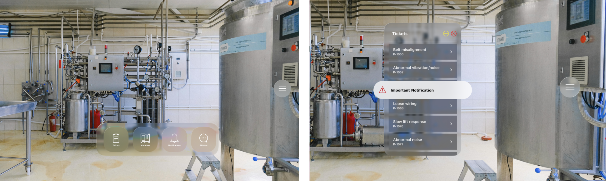

Tools: Meta Quest 3, Unity, Figma, Miro
This bachelor’s thesis investigates how the spatial arrangement and anchoring of AR information
in the production employees’ field of view affect efficiency and safety. Within the Bosch ARIA
project, various information display concepts are developed using a user-centered design process
and evaluated in usability tests for usability, mental workload, and safety.
Results indicate that centrally positioned AR information improves perception and user
experience but increases overlap with the real environment, so only essential information should
be shown. Urgent notifications are best displayed centrally and head-anchored, non-urgent messages
can appear subtly (e.g., as a red dot), and important but non-urgent information works well at the
upper edge of the field of view.

Augmented Reality (AR) has significant potential to support industrial maintenance and repair tasks by providing context-sensitive information directly in the user’s field of view. However, overlaying digital content onto the real environment introduces new challenges for user experience design, particularly in safety-critical work environments. Poorly positioned or overly intrusive AR interfaces can distract users, obscure relevant parts of the physical environment, and increase cognitive load, potentially leading to safety risks. Despite the growing adoption of AR in industrial contexts, design guidelines for the spatial placement and anchoring of interface elements remain limited. This bachelor’s thesis investigates how different spatial arrangements and anchoring strategies of AR information influence efficiency, perception, mental workload, and occupational safety during industrial maintenance tasks.
The thesis was conducted as part of a Bosch project. The project aims to develop an AR-based assistance system that supports
maintenance personnel through contextual information and AI-driven assistance.
The application is designed primarily for optical see-through smart glasses (Magic Leap 2) and targets
both experienced technicians and new employees. The broader goal is to improve knowledge transfer,
reduce onboarding time, and support workers in increasingly complex industrial environments.
The research questions to be answered in this thesis, were the following:
The project followed the Human-Centered Design process, ensuring a consistent focus on user needs throughout all phases:
The design concepts were evaluated through a controlled user study comparing two
different UI versions that primarily differed in the positioning and anchoring of
interface elements (central vs. peripheral placement, head-anchored vs. world-anchored).
Evaluation included:
By combining quantitative and qualitative methods, the study captured both objective performance metrics and subjective user experience data.
The results indicate that centrally placed AR information improves visibility and
overall user experience but also increases the risk of obstructing the real environment.
Therefore, central and head-anchored displays should be reserved for urgent or safety-critical
information only.
For notifications, placement should depend on priority:
Overall, the study highlights the importance of context-aware information prioritization and spatial UI design to ensure both usability and safety in industrial AR applications.
The results of this study indicate that the positioning and presentation of information
in augmented reality can affect both safety and efficiency.
Central placement improved perception and enabled faster reactions and was also
perceived as more comfortable by users in qualitative feedback. Differences in
reaction time and perception were also observed for notifications, with anchoring
playing a key role. Urgent, head-anchored notifications were rarely missed.
Another important finding was the users’ desire for layout personalization.
The ability to reposition and minimize windows was rated positively, as it allows
the field of view to be cleared quickly. At the same time, customization should be
partially restricted, for example by preventing users from hiding safety-critical notifications.
Due to the small sample size, the quantitative results are only partially representative.
Nevertheless, they were sufficient to identify initial usability issues. Future work should
validate and further refine the iterated design in larger user studies using a fully
functional application to obtain more realistic and precise efficiency measurements.